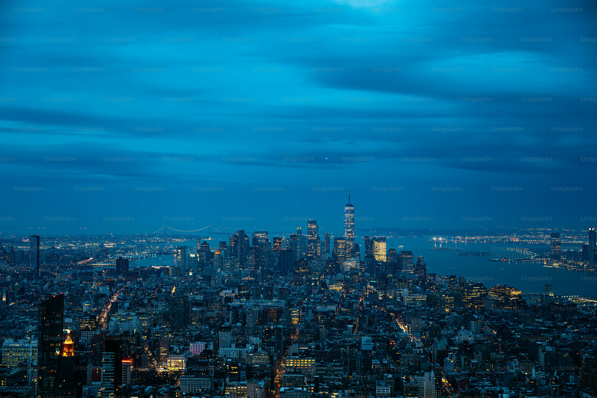
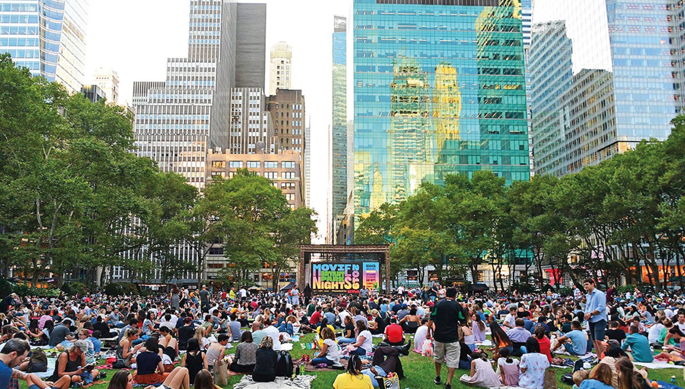
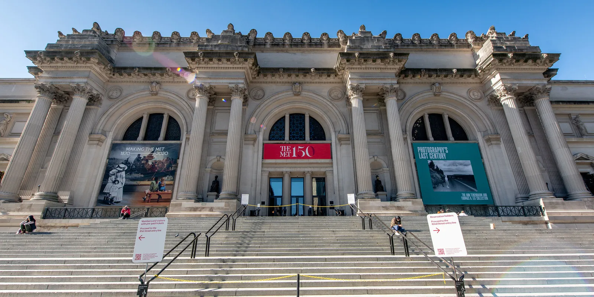

Febrero
En el mes de febrero se puede visitar el MoMA The Museum of Modern Art y el Museo de Arte Moderno de Nueva York por $25 dólares por adulto, pero si tienes 65 años o más, puedes mostrar tu identificación y pagar $18.

Marzo En marzo puedes tener un paseo nocturno sobre la ciudad en un helicoptero por tan solo $275 dolares.
Julio
Para un breve descanso, un picnic o una gran oportunidad fotográfica, le recomendamos una visita a Sheep Meadow. La entrada es gratuita. Movies under the Stars es un evento que proyecta películas en distintos parques de Nueva York a lo largo de los 5 distritos. La entrada es gratuita y es un evento para toda la familia. El 4 de julio se celebra la Independencia de Estados Unidos con un espectáculo pirotécnico impresionante por lo cual puedes disfrutar de ellos.
Agosto
En agosto puedes asistir al Museo Metropolitano de Arte por $30 dolares por persona este es otro de los puentes más bellos de Central Park. 